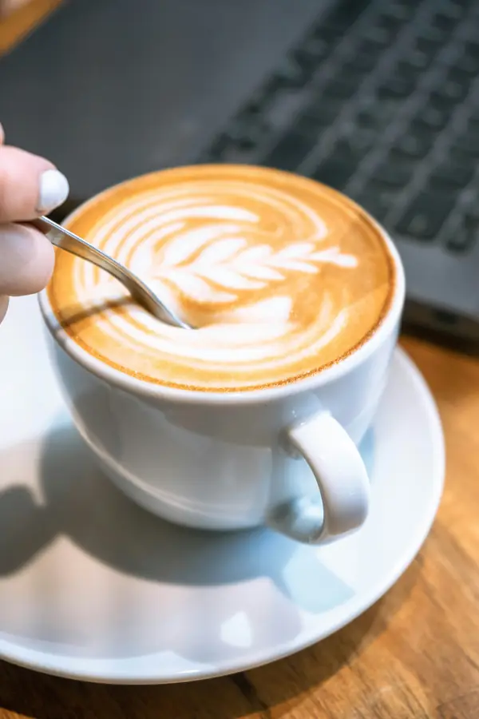
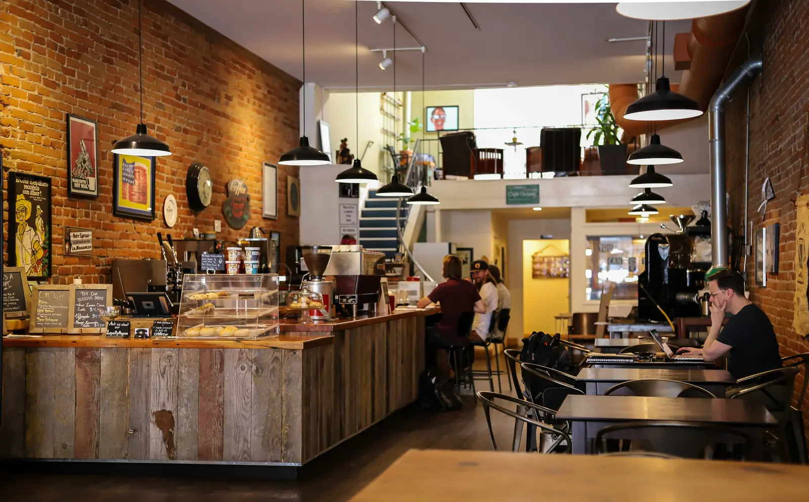
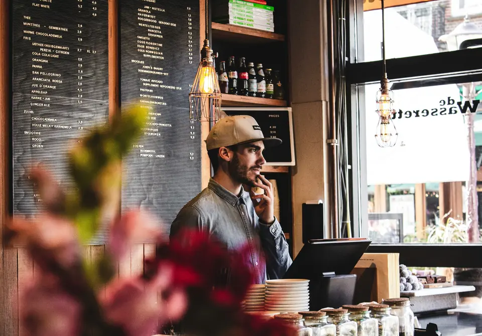
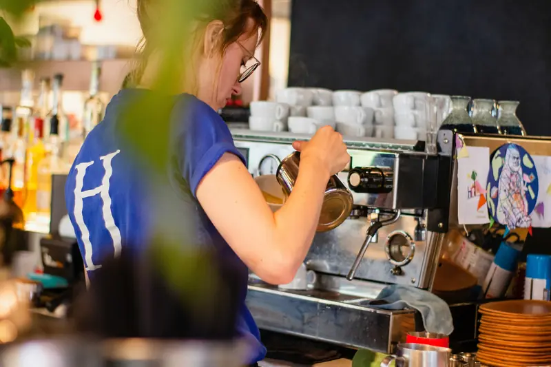

Capuchino
$3.300El que más pedimos a la hora de almuerzo.

Tostamos en Santiago, horneamos todas las mañanas y tenemos mesas largas para quedarse. A media cuadra del metro Irarrázaval.
Ver la carta ↓Wifi + enchufes en todas las mesas
Grano de tueste medio, tostado cada dos semanas en San Joaquín. Leche de avena o almendra sin cobro extra.

El que más pedimos a la hora de almuerzo.

Lo pide medio barrio a las 8 de la mañana, camino al metro.

La hace Carmen los jueves.

Para los días de calor: cualquier café helado más un scone de queso o de naranja.

El segundo piso es la parte tranquila: mesas largas, luz de ventana hasta las seis y nadie te va a apurar. Si vienen en grupo a reunión, usen la mesa del fondo.
Escríbenos qué quieres y a qué hora pasas.
Te respondemos con el total y la hora en que queda listo. Casi siempre son 10 minutos.
Lo retiras en la barra, al lado de la caja. Pagas ahí con tarjeta, efectivo o transferencia.
Recibimos pedidos desde las 7:30. No hacemos delivery: somos pocos y preferimos que el café llegue caliente.

«Hola, 2 cortados con leche de avena y un scone de queso para las 8:15. A nombre de Paula.»8:02

Ignacio Fuentes estuvo nueve años detrás de barras ajenas en Providencia. En 2019 arrendó el local de la esquina, el que fue la ferretería de don Julio por casi treinta años, y lo arregló con su hermano un fin de semana tras otro. Los estantes del fondo son los mismos.
Le puso Andén porque la mitad de la gente que entra viene saliendo del metro, apurada. La otra mitad se queda toda la mañana. Las dos cosas nos parecen bien.
Hoy somos seis. Carmen, la mamá de Ignacio, hace las tortas; el pan llega a las siete desde una panadería de la calle Dublé Almeyda.
Av. Irarrázaval 2940, Ñuñoa
Feriados abrimos de 9:00 a 15:00, salvo el 18 de septiembre y Año Nuevo.